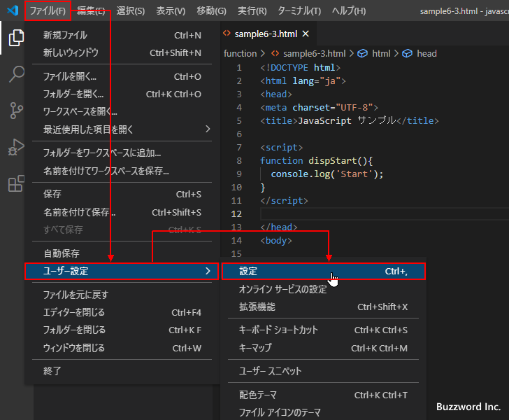
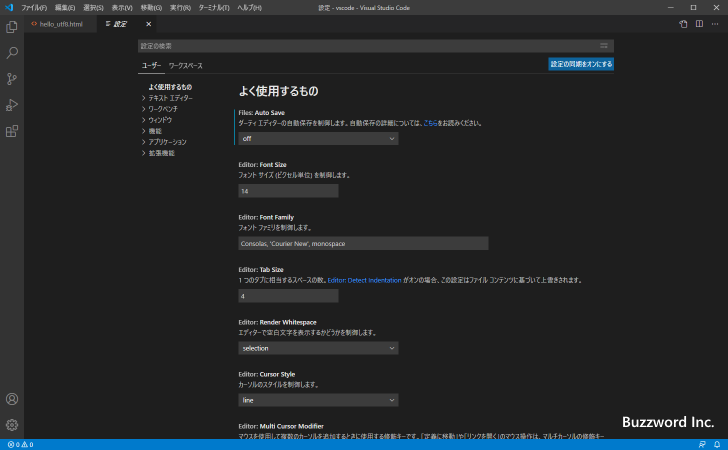
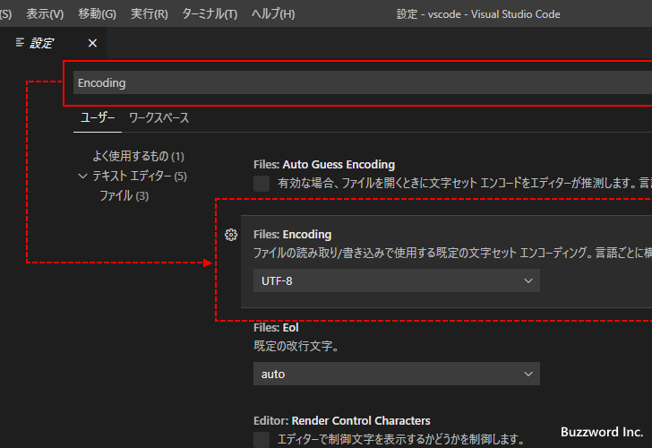
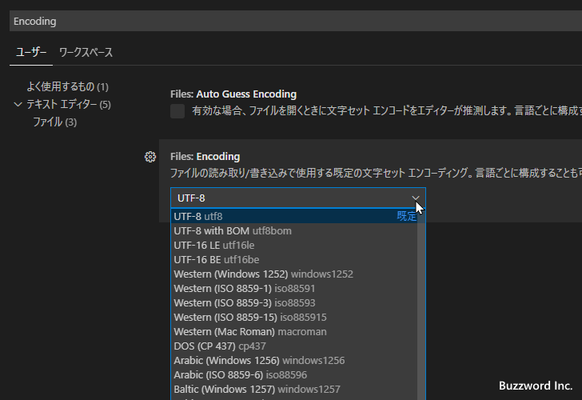
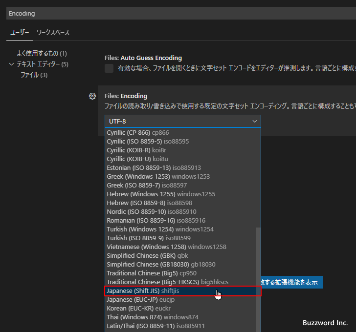
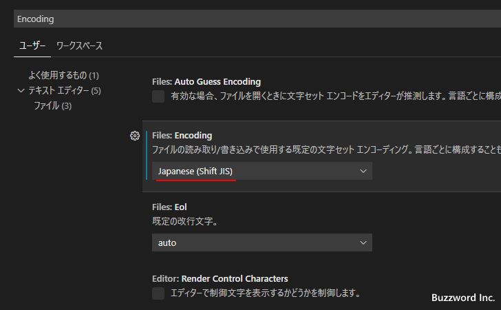
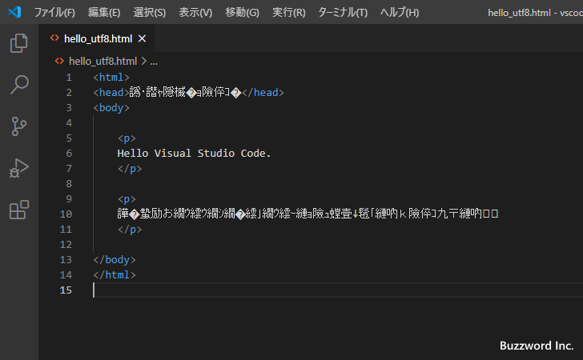
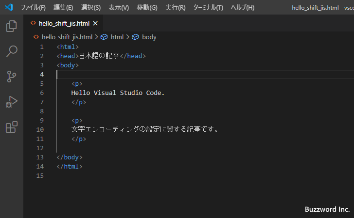
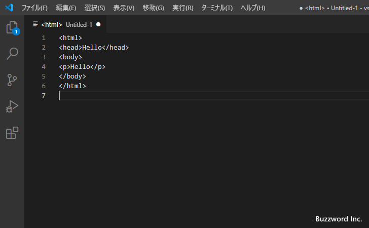
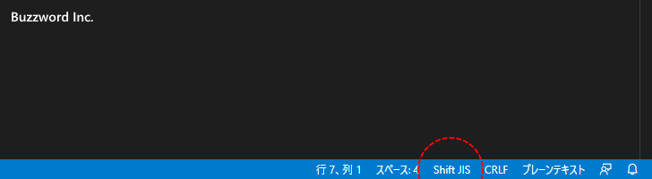

デフォルトで使用する文字エンコードの設定
Visual Studio Code のエディターでファイルを開くと、デフォルトでは文字エンコードとして UTF-8 が使用されているとものとしてファイルが開きます。また新しいファイルを作成したあとで保存するときにも文字エンコードとして UTF-8 が使用されます。通常は UTF-8 をデフォルトにしておき必要な時にだけ変更する形で問題ありませんが、別の文字エンコードをメインで使用する場合にはデフォルトの文字エンコードを変更しておくと便利です。ここでは Visual Studio Code のデフォルトの文字エンコードを UTF-8 から変更する方法について解説します。
デフォルトの文字エンコードを変更する
Visual Studio Code のデフォルト文字エンコードを変更するには「ファイル」メニューの中にある「ユーザー設定」をクリックし、さらに表示されたサブメニューの中から「設定」をクリックしてください。

Visual Studio Code の設定画面が表示されます。

画面上部の検索ボックスに「Encoding」と入力してください。いくつか設定項目が表示されますが、「Files:Encoding」の設定項目が関係する設定項目です。

デフォルトの文字エンコードは現在 UTF-8 になっています。変更するには UTF-8 と表示されているところをクリックし、表示されたドロップダウンメニューから新しいデフォルト文字エンコードを選択してください。

今回は「Japanese(Shift_JIS)」を選択しました。


では実際に試してみます。最初に文字エンコードとして UTF-8 を使って保存されたファイルを開いてみます。

現在文字エンコードの自動判別はオフにしているので、 UTF-8 で保存されたファイルをデフォルトの文字エンコードである Shift_JIS で保存されている前提で開いたため、文字化けして表示されてしまいました。
次に文字エンコードとして Shift_JIS を使って保存されたファイルを開いてみます。

こちらは問題なく表示されました。
次に新しいファイルを作成してみます。

画面右下のステータスバーを確認すると、新しく作成したファイルの文字エンコードはデフォルトとして設定されている Shift_JIS になっていることが確認できます。

このようにファイルを開くときや新しく作成したファイルを保存するときに使用されるデフォルトの文字エンコードを変更することができました。
-- --
Visual Studio Code のデフォルトの文字エンコードを UTF-8 から変更する方法について解説しました。
( Written by Tatsuo Ikura )

著者 / TATSUO IKURA
初心者～中級者の方を対象としたプログラミング方法や開発環境の構築の解説を行うサイトの運営を行っています。